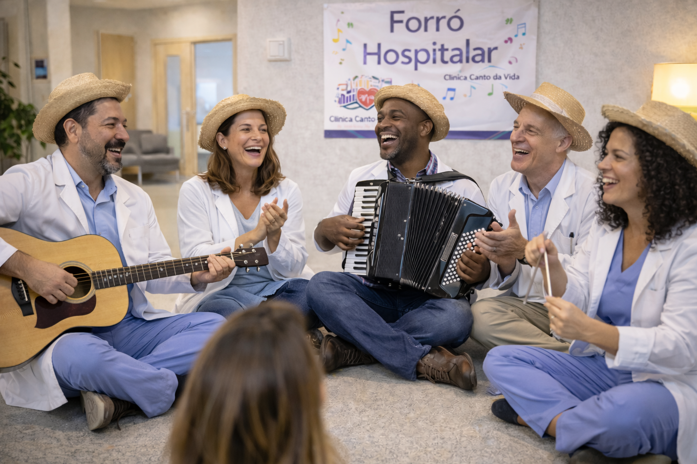
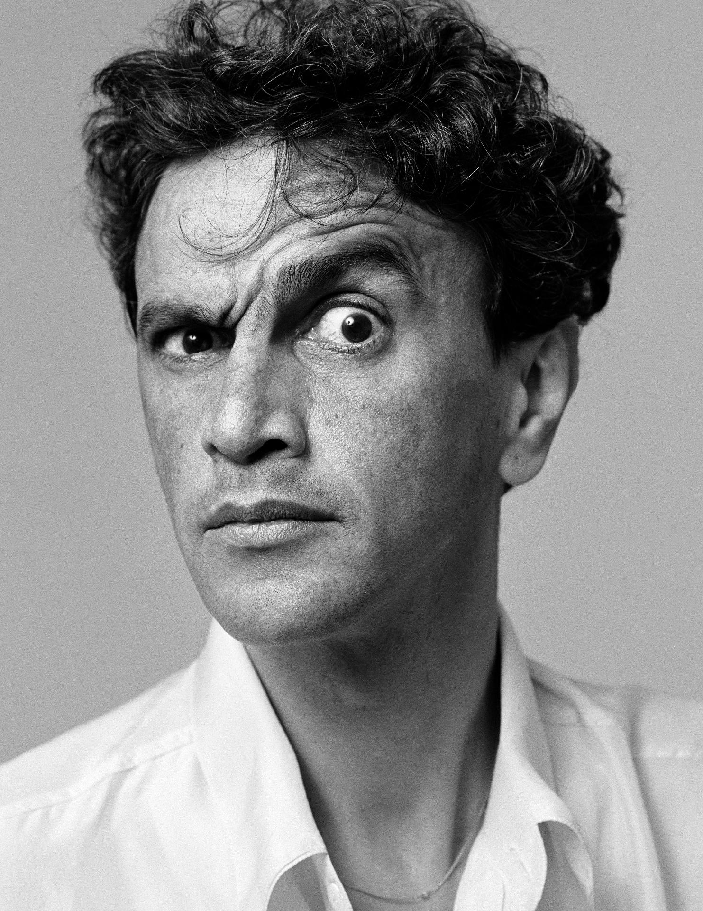

Atendemos as especialidades de cardiologia, ginecologia, neurologia e psiquiatria.
Equipamentos modernos, diagnósticos precisos e resultados rápidos.
Estrutura completa para receber pacientes com transtornos psicológicos.

Tratamentos diferenciados e inovadores.
Consultas e acompanhamentos remotos, atendendo as necessidades do paciente.
Com sólida experiência no acompanhamento das condições cardiovasculares, o Dr. Belo, como é mais conhecido, emprega técnicas com ênfase na relação entre os fatores emocionais e a saúde do coração. Sua prática é marcada pela forte compreensão quanto aos problemas relacionados ao coração.
"O tarô revelou e os búzios disseram, que não tem mistério o nosso amor, nas pétalas de flor, não dá mal-me-quer só bem-me-quer no coração"
Com ampla atuação no cuidado à saúde feminina, a Dra. Simone Mendes é reconhecida por sua abordagem acolhedora e centrada na paciente. Sua prática clínica envolve desde o acompanhamento preventivo até questões emocionais, sempre com foco no bem-estar integral da mulher.
"Põe aquela roupa e o batom. Entra no carro, amiga aumenta o som."
Referência em neurologia clínica, a Dra. Rita Lee atua na investigação de distúrbios do sistema nervoso com abordagem analítica e não convencional. Sua trajetória é marcada pela busca por novas interpretações dos processos cognitivos, contribuindo para diagnósticos mais precisos e tratamentos personalizados.
"Não vale a pena esperar, oh não. Tire isso da cabeça e ponha o resto no lugar"

Atuando desde meados de 1967, o Dr. Caetano Veloso construiu uma carreira voltada à análise das múltiplas camadas do comportamento humano. Formado na Bahia e com especialização em Londres, desenvolveu abordagens terapêuticas inovadoras, com foco em solidão, não identificação e alegria. Muitos pacientes já foram e continuarão sendo impactados pelo seu legado.
"Ela pensa em casamento e eu nunca mais fui à escola"
Endereço: SEPN 707/907, Asa Norte, Brasília - DF
Horário: 08h às 18h (segunda a sexta)
Email: contato@cantodavida.com.br
Telefone: (61) 99999-9999
Convênios: Unimed, Bradesco e Amil